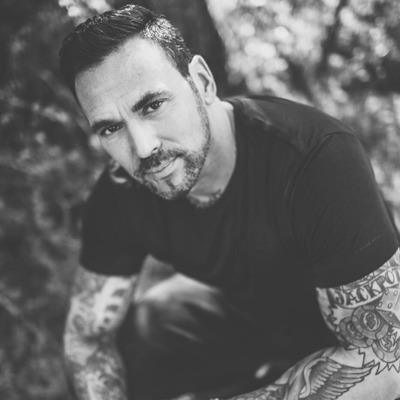

Jason David Frank
04.07.1973 - 19.11.2022
I've got a lot of fans, but I say friends, because every time I meet a fan somewhere around the world, I don't consider them a fan; I consider them as a friend.
If you live day by day and do the best you can, then you'll have a great future. If you worry about the future, and you don't live the best day, you're not going to have a future.
I try to motivate people and inspire them, to let them know that they're not alone.
I have always been a martial arts fighter; it goes to back when I was eighteen. I was competing on the circuit, but when you're performing, you tend to pull punches because you don't want to hurt anyone.
JDF's Life and carer
Jason David Frank was born 4, September 1973 in Covina, California to father Ray Frank and mother Janice Christine Soter. He had an older brother, Eric Frank, who died at the age of 29 after an unspecified illness.Jason David Frank had three children with Shawna Frank. This marriage ended in 2001. In 2003, Frank married his second wife, Tammie, who is a black belt marital artist and she was producer and star of My Morphin Life (a realyty show that follows Jason David Frank's life). They had one daughter, Jenna Frank, who was born in 2004.
Frank was cast for the role of Tommy Oliver, the Green Power Ranger. The role was set for only 14 episodes. Due to his popularity, Frank returned as the White Power Ranger. Three seasons later, Mighty Morphin Power Rangers transitioned into Power Rangers Zeo. Frank's character became Red Zeo Ranger. Next year, his character became the first Red Turbo Ranger, but mid season the Frank agreed to leave the show and he and three fellow actors were replaced.In 2002, for the 10th anniversary, Jason David Frank returned to Power Rangers as Red Zeo Ranger in the episode "Forever Red". Then, two years later, he reprised his role as' Black Dino Ranger in Power Rangers' Dino Thunder. Also, he came back as Tommy Oliver for the season finale in Power Rangers Super Megaforce and for the 25th anniversary in Power Rangers Super Ninja Steel. After Frank met with Stan Lee, he wanted to develop a Green Ranger for a solo series or a film. But in August 2022, Frank said that he had retired from the franchise. He also had a couple of appearances in Mortal combat and Street Fighter.Frank's last role was in the film Legend of the White Dragon, which is currently in post-production and set for release in 2023.
Best known for his role as one of the best Power Rangers ever, Tommy Oliver. Frank was a marital artist. Frank studied marital arts at the age of 4. He had knowledge of many different styles of marital arts and Frank used that to create his own blend of American Karate, "Toso Kune Do".Frank joined MMA in 2009 and had 4 wins as an amateur and one as pro MMA. He retired due to biceps tear injury.
My farewell
On November 20, 2022, we lost our hero and idol due to death by suicide. I never had a chance to meet with my childhood hero in person but news about his death did put some tears in my eyes. Even now, while I write this,I hope you are in some better place right now and free of your demons. You will always be in the hearts of your family and all people that loved you and still love and admire you. You will not be forgotten. May you rest in peace and love.